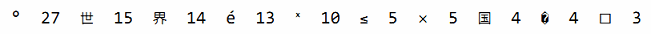

4.3. Map
哈希表是一种巧妙并且实用的数据结构。它是一个无序的key/value对的集合，其中所有的key都是不同的，然后通过给定的key可以在常数时间复杂度内检索、更新或删除对应的value。
在Go语言中，一个map就是一个哈希表的引用，map类型可以写为map[K]V，其中K和V分别对应key和value。map中所有的key都有相同的类型，所有的value也有着相同的类型，但是key和value之间可以是不同的数据类型。其中K对应的key必须是支持==比较运算符的数据类型，所以map可以通过测试key是否相等来判断是否已经存在。虽然浮点数类型也是支持相等运算符比较的，但是将浮点数用做key类型则是一个坏的想法，正如第三章提到的，最坏的情况是可能出现的NaN和任何浮点数都不相等。对于V对应的value数据类型则没有任何的限制。
内置的make函数可以创建一个map：
ages := make(map[string]int) // mapping from strings to ints
我们也可以用map字面值的语法创建map，同时还可以指定一些最初的key/value：
ages := map[string]int{
"alice": 31,
"charlie": 34,
}
这相当于
ages := make(map[string]int)
ages["alice"] = 31
ages["charlie"] = 34
因此，另一种创建空的map的表达式是map[string]int{}。
Map中的元素通过key对应的下标语法访问：
ages["alice"] = 32
fmt.Println(ages["alice"]) // "32"
使用内置的delete函数可以删除元素：
delete(ages, "alice") // remove element ages["alice"]
所有这些操作是安全的，即使这些元素不在map中也没有关系；如果一个查找失败将返回value类型对应的零值，例如，即使map中不存在“bob”下面的代码也可以正常工作，因为ages[“bob”]失败时将返回0。
ages["bob"] = ages["bob"] + 1 // happy birthday!
而且x += y和x++等简短赋值语法也可以用在map上，所以上面的代码可以改写成
ages["bob"] += 1
更简单的写法
ages["bob"]++
但是map中的元素并不是一个变量，因此我们不能对map的元素进行取址操作：
_ = &ages["bob"] // compile error: cannot take address of map element
禁止对map元素取址的原因是map可能随着元素数量的增长而重新分配更大的内存空间，从而可能导致之前的地址无效。
要想遍历map中全部的key/value对的话，可以使用range风格的for循环实现，和之前的slice遍历语法类似。下面的迭代语句将在每次迭代时设置name和age变量，它们对应下一个键/值对：
for name, age := range ages {
fmt.Printf("%s\t%d\n", name, age)
}
Map的迭代顺序是不确定的，并且不同的哈希函数实现可能导致不同的遍历顺序。在实践中，遍历的顺序是随机的，每一次遍历的顺序都不相同。这是故意的，每次都使用随机的遍历顺序可以强制要求程序不会依赖具体的哈希函数实现。如果要按顺序遍历key/value对，我们必须显式地对key进行排序，可以使用sort包的Strings函数对字符串slice进行排序。下面是常见的处理方式：
import "sort"
var names []string
for name := range ages {
names = append(names, name)
}
sort.Strings(names)
for _, name := range names {
fmt.Printf("%s\t%d\n", name, ages[name])
}
因为我们一开始就知道names的最终大小，因此给slice分配一个合适的大小将会更有效。下面的代码创建了一个空的slice，但是slice的容量刚好可以放下map中全部的key：
names := make([]string, 0, len(ages))
在上面的第一个range循环中，我们只关心map中的key，所以我们忽略了第二个循环变量。在第二个循环中，我们只关心names中的名字，所以我们使用“_”空白标识符来忽略第一个循环变量，也就是迭代slice时的索引。
map类型的零值是nil，也就是没有引用任何哈希表。
var ages map[string]int
fmt.Println(ages == nil) // "true"
fmt.Println(len(ages) == 0) // "true"
map上的大部分操作，包括查找、删除、len和range循环都可以安全工作在nil值的map上，它们的行为和一个空的map类似。但是向一个nil值的map存入元素将导致一个panic异常：
ages["carol"] = 21 // panic: assignment to entry in nil map
在向map存数据前必须先创建map。
通过key作为索引下标来访问map将产生一个value。如果key在map中是存在的，那么将得到与key对应的value；如果key不存在，那么将得到value对应类型的零值，正如我们前面看到的ages[“bob”]那样。这个规则很实用，但是有时候可能需要知道对应的元素是否真的是在map之中。例如，如果元素类型是一个数字，你可能需要区分一个已经存在的0，和不存在而返回零值的0，可以像下面这样测试：
age, ok := ages["bob"]
if !ok { /* "bob" is not a key in this map; age == 0. */ }
你会经常看到将这两个结合起来使用，像这样：
if age, ok := ages["bob"]; !ok { /* ... */ }
在这种场景下，map的下标语法将产生两个值；第二个是一个布尔值，用于报告元素是否真的存在。布尔变量一般命名为ok，特别适合马上用于if条件判断部分。
和slice一样，map之间也不能进行相等比较；唯一的例外是和nil进行比较。要判断两个map是否包含相同的key和value，我们必须通过一个循环实现：
func equal(x, y map[string]int) bool {
if len(x) != len(y) {
return false
}
for k, xv := range x {
if yv, ok := y[k]; !ok || yv != xv {
return false
}
}
return true
}
从例子中可以看到如何用!ok来区分元素不存在，与元素存在但为0的。我们不能简单地用xv != y[k]判断，那样会导致在判断下面两个map时产生错误的结果：
// True if equal is written incorrectly.
equal(map[string]int{"A": 0}, map[string]int{"B": 42})
Go语言中并没有提供一个set类型，但是map中的key也是不相同的，可以用map实现类似set的功能。为了说明这一点，下面的dedup程序读取多行输入，但是只打印第一次出现的行。（它是1.3节中出现的dup程序的变体。）dedup程序通过map来表示所有的输入行所对应的set集合，以确保已经在集合存在的行不会被重复打印。
gopl.io/ch4/dedup
func main() {
seen := make(map[string]bool) // a set of strings
input := bufio.NewScanner(os.Stdin)
for input.Scan() {
line := input.Text()
if !seen[line] {
seen[line] = true
fmt.Println(line)
}
}
if err := input.Err(); err != nil {
fmt.Fprintf(os.Stderr, "dedup: %v\n", err)
os.Exit(1)
}
}
Go程序员将这种忽略value的map当作一个字符串集合，并非所有map[string]bool类型value都是无关紧要的；有一些则可能会同时包含true和false的值。
有时候我们需要一个map或set的key是slice类型，但是map的key必须是可比较的类型，但是slice并不满足这个条件。不过，我们可以通过两个步骤绕过这个限制。第一步，定义一个辅助函数k，将slice转为map对应的string类型的key，确保只有x和y相等时k(x) == k(y)才成立。然后创建一个key为string类型的map，在每次对map操作时先用k辅助函数将slice转化为string类型。
下面的例子演示了如何使用map来记录提交相同的字符串列表的次数。它使用了fmt.Sprintf函数将字符串列表转换为一个字符串以用于map的key，通过%q参数忠实地记录每个字符串元素的信息：
var m = make(map[string]int)
func k(list []string) string { return fmt.Sprintf("%q", list) }
func Add(list []string) { m[k(list)]++ }
func Count(list []string) int { return m[k(list)] }
使用同样的技术可以处理任何不可比较的key类型，而不仅仅是slice类型。这种技术对于想使用自定义key比较函数的时候也很有用，例如在比较字符串的时候忽略大小写。同时，辅助函数k(x)也不一定是字符串类型，它可以返回任何可比较的类型，例如整数、数组或结构体等。
这是map的另一个例子，下面的程序用于统计输入中每个Unicode码点出现的次数。虽然Unicode全部码点的数量巨大，但是出现在特定文档中的字符种类并没有多少，使用map可以用比较自然的方式来跟踪那些出现过的字符的次数。
gopl.io/ch4/charcount
// Charcount computes counts of Unicode characters.
package main
import (
"bufio"
"fmt"
"io"
"os"
"unicode"
"unicode/utf8"
)
func main() {
counts := make(map[rune]int) // counts of Unicode characters
var utflen [utf8.UTFMax + 1]int // count of lengths of UTF-8 encodings
invalid := 0 // count of invalid UTF-8 characters
in := bufio.NewReader(os.Stdin)
for {
r, n, err := in.ReadRune() // returns rune, nbytes, error
if err == io.EOF {
break
}
if err != nil {
fmt.Fprintf(os.Stderr, "charcount: %v\n", err)
os.Exit(1)
}
if r == unicode.ReplacementChar && n == 1 {
invalid++
continue
}
counts[r]++
utflen[n]++
}
fmt.Printf("rune\tcount\n")
for c, n := range counts {
fmt.Printf("%q\t%d\n", c, n)
}
fmt.Print("\nlen\tcount\n")
for i, n := range utflen {
if i > 0 {
fmt.Printf("%d\t%d\n", i, n)
}
}
if invalid > 0 {
fmt.Printf("\n%d invalid UTF-8 characters\n", invalid)
}
}
ReadRune方法执行UTF-8解码并返回三个值：解码的rune字符的值，字符UTF-8编码后的长度，和一个错误值。我们可预期的错误值只有对应文件结尾的io.EOF。如果输入的是无效的UTF-8编码的字符，返回的将是unicode.ReplacementChar表示无效字符，并且编码长度是1。
charcount程序同时打印不同UTF-8编码长度的字符数目。对此，map并不是一个合适的数据结构；因为UTF-8编码的长度总是从1到utf8.UTFMax（最大是4个字节），使用数组将更有效。
作为一个实验，我们用charcount程序对英文版原稿的字符进行了统计。虽然大部分是英语，但是也有一些非ASCII字符。下面是排名前10的非ASCII字符：

下面是不同UTF-8编码长度的字符的数目：
len count
1 765391
2 60
3 70
4 0
Map的value类型也可以是一个聚合类型，比如是一个map或slice。在下面的代码中，graph 这个 map 的key类型是一个字符串，value类型map[string]bool代表一个字符串集合。从概念上讲，graph将一个字符串类型的key映射到一组相关的字符串集合，它们指向新的graph的key。
gopl.io/ch4/graph
var graph = make(map[string]map[string]bool)
func addEdge(from, to string) {
edges := graph[from]
if edges == nil {
edges = make(map[string]bool)
graph[from] = edges
}
edges[to] = true
}
func hasEdge(from, to string) bool {
return graph[from][to]
}
其中addEdge函数惰性初始化map是一个惯用方式，也就是说在每个值首次作为key时才初始化。hasEdge函数显示了如何让map的零值也能正常工作；即使from到to的边不存在，graph[from][to]依然可以返回一个有意义的结果。
练习 4.8： 修改charcount程序，使用unicode.IsLetter等相关的函数，统计字母、数字等Unicode中不同的字符类别。
练习 4.9： 编写一个程序wordfreq程序，报告输入文本中每个单词出现的频率。在第一次调用Scan前先调用input.Split(bufio.ScanWords)函数，这样可以按单词而不是按行输入。